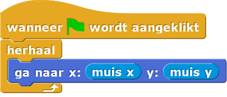
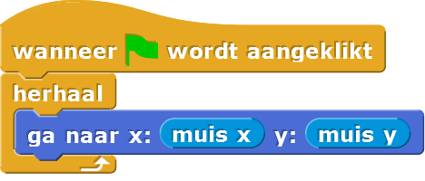
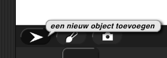

Sprite die de muis volgt
In deze les ga je twee sprites programmeren. Eén sprite gaat je muis volgen. De ander gaat de eerste sprite achtervolgen. Wanneer ze elkaar aanraken, zullen ze een praatje houden met elkaar.
Op deze pagina ga je de eerste Sprite programmeren zodat hij je muis volgt en de tweede sprite programmeren zodat hij in de richting van de eerste wijst, als voorbereiding op het achtervolgen.
- Start een nieuw project. Sla het op als: H1L5-SpriteAchtervolg.
 Lees het onderstaande script en bedenk wat het doet, voordat je het bouwt. Wat is je verwachting?

Lees het onderstaande script en bedenk wat het doet, voordat je het bouwt. Wat is je verwachting?

-
Bouw nu het script en voer het uit. Beweeg je muis over het speelveld terwijl het programma loopt.
Hoedblokken
Het blok aan de bovenkant van het script heet eenhoedblok. De vorm benadrukt dat het alleen aan het begin van een script kan worden gebruikt.
Hoedblokken zeggen niet wat het script moet doen; ze zeggen wanneer het script iets moet doen. Hoedblokken zeggen via welke gebeurtenis het script moet starten. In dit geval start het script wanneer er op de groene vlag (rechtsboven) geklikt wordt. Om dit script te stoppen , klik je op de knop met het rode stop teken. -
Werkt het programma zoals je verwacht had?
-
Maak een tweede sprite door te klikken op de
objectknop, onder het speelveld. 
Gebruik dan hetricht_naarblok om hem naar Sprite(2) te richten. De animatie hieronder laat zien hoe dat moet.
en
rapporteren de locatie van de muis op het speelveld. Ze zijn te vinden in het Waarnemen-palet.
De nieuwe sprite, genaamd Sprite(2), verschijnt op het speelveld.
Hij is gloednieuw, dus hij heeft nog geen scripts. De knoppen onder het speelveld kan je gebruiken
om te selecteren welke sprite je wil programmeren.
-
Pas je script voor Sprite(2) zo aan, dat wanneer er op de groene vlag geklikt wordt, het wijzen naar de andere sprite zich
herhaalt.
-
Klik op de groene vlag en controleer of je script doet wat het zou
moeten doen:
- De eerste Sprite volgt je muisbewegingen.
- Sprite(2) blijft op zijn plek, maar wijst altijd naar de eerste Sprite.
Terwijl een script bezig is met uitvoeren, licht zijn rand op. Als het script niet
lang duurt om uit te voeren, dan zie je misschien alleen een korte flits. Of zelfs dat niet...
Allebei de scripts starten via een klik op de groene vlag, dus
de scripts lopen dan tegelijkertijd.